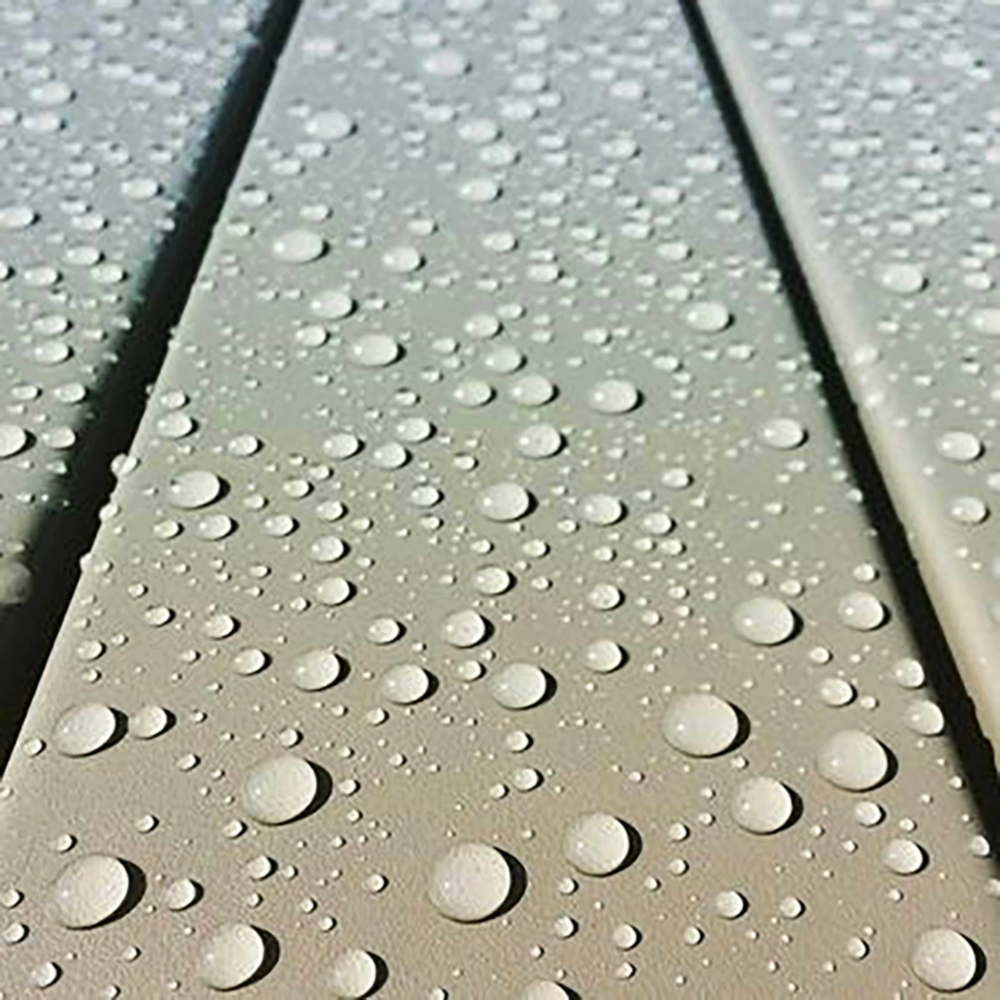
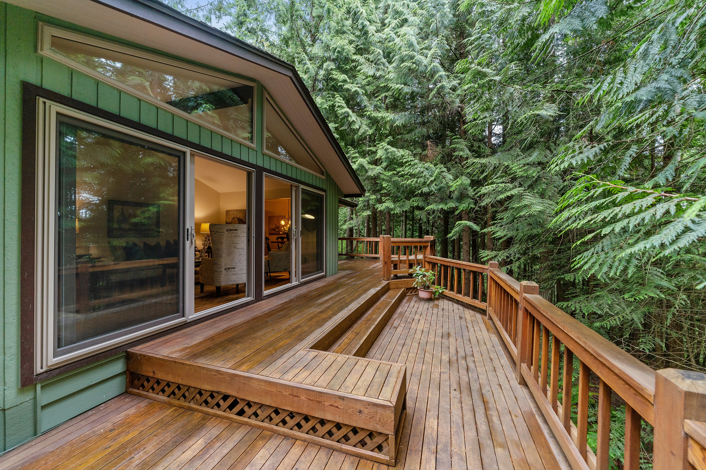
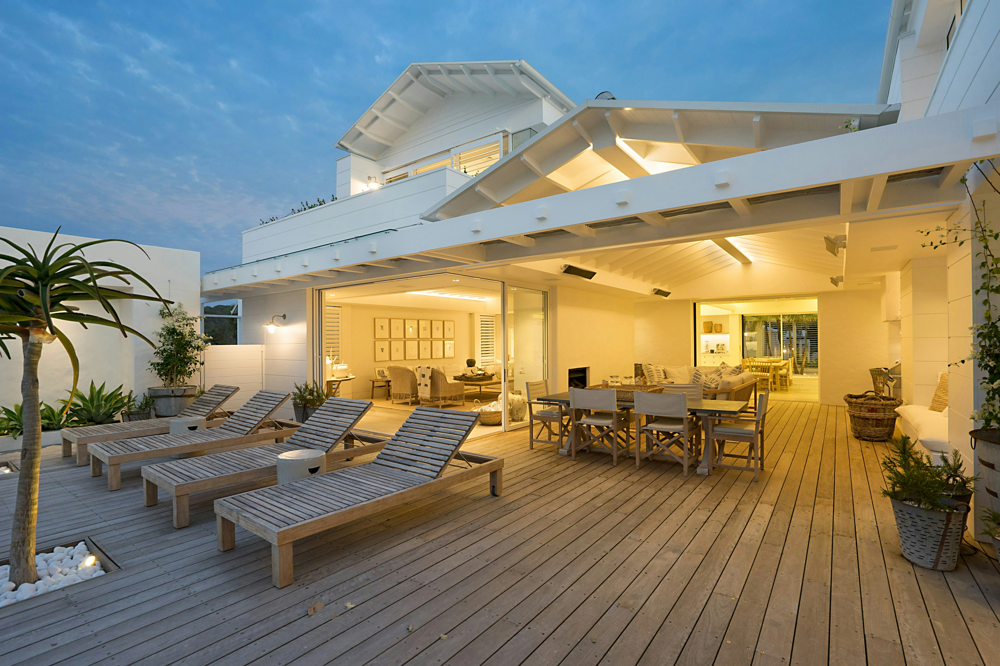

Moisture protection
Waterproofing helps block water intrusion that can lead to rot, surface breakdown, and hidden structural damage.
OUR SERVICES
Moisture is one of the biggest threats to the life of a deck. Proper waterproofing helps protect surfaces, framing, and surrounding areas from long-term damage.
Structures, Inc. provides deck waterproofing solutions designed to help extend the life of outdoor structures while improving performance through changing weather conditions. We focus on practical protection that supports durability, safety, and long-term value.
Waterproofing helps reduce moisture intrusion, preserve structural integrity, and keep outdoor spaces performing better over time.



DETAILED OVERVIEW
Our Deck Waterproofing service is designed to help shield decks and elevated outdoor surfaces from the effects of rain, humidity, and daily exposure to the elements. Without proper waterproofing, moisture can work its way into the deck system, leading to deterioration, surface wear, and structural concerns over time.
We evaluate the condition of the existing surface, identify vulnerable areas, and apply practical solutions intended to help prevent water intrusion and improve overall resilience. This can be especially important for decks located over living spaces, entry areas, or lower-level structures where water penetration can create additional damage below.
Whether the goal is to preserve an existing deck, improve performance, or protect a new installation from premature wear, our approach focuses on long-term function, dependable materials, and results that support the life of the structure.
WHY IT MATTERS
Waterproofing helps block water intrusion that can lead to rot, surface breakdown, and hidden structural damage.
Protecting the surface from weather exposure can help preserve the deck and reduce the need for premature repairs.
A properly protected deck is easier to maintain, more dependable over time, and better equipped to handle the elements.
START YOUR PROJECT
Contact Structures, Inc. to discuss your deck waterproofing needs, ask questions, or request a consultation.
Contact Us